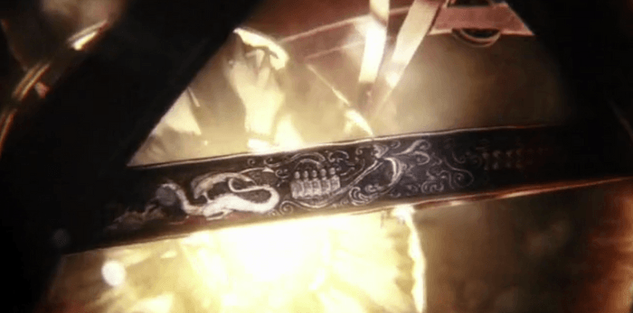
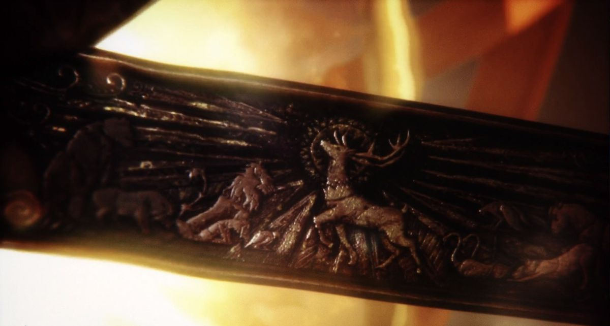
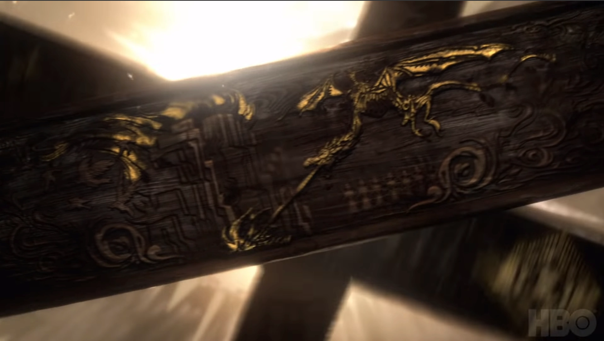
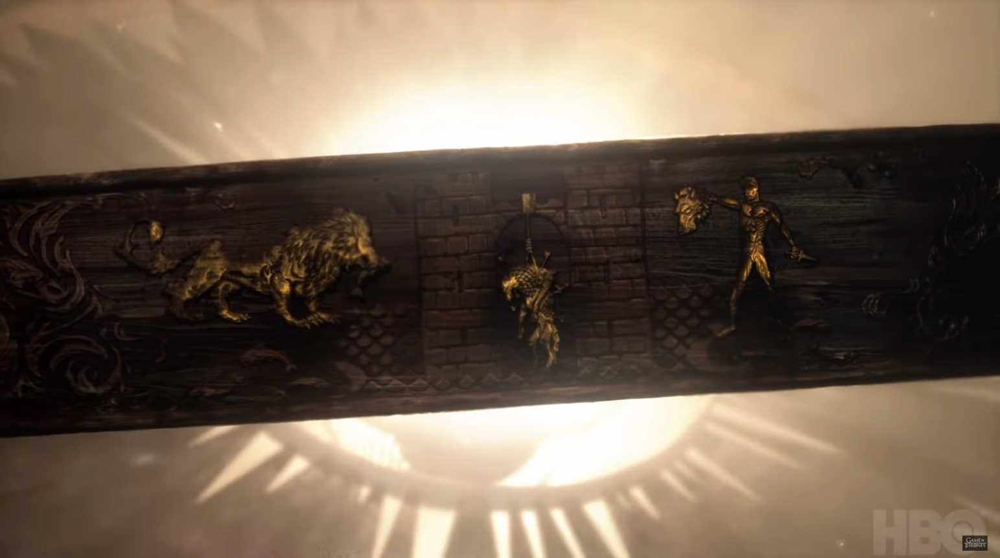
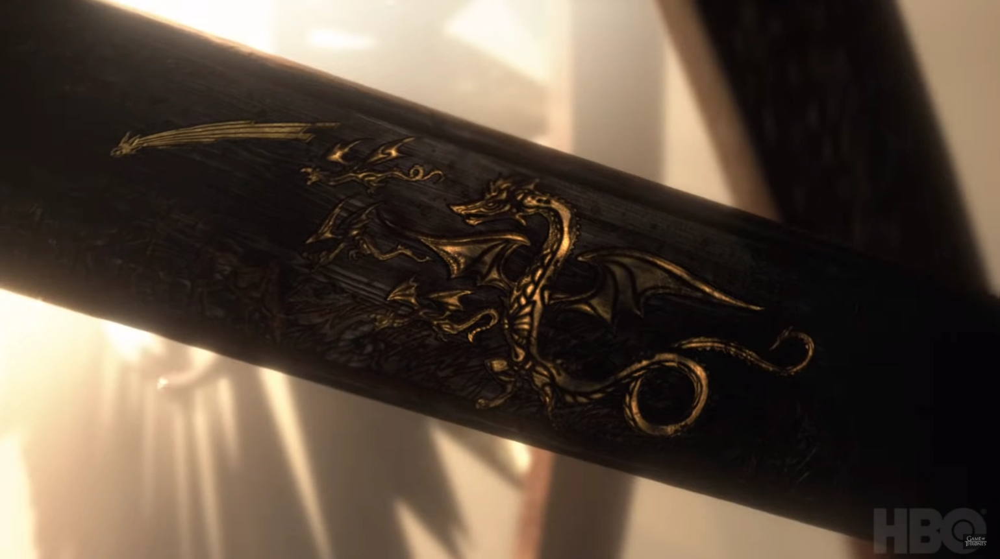

If Game of Thrones is an allegory of Illumination, then there must be a light. And, for a story thoroughly preoccupied with the changing of the seasons, what better candidate for that light than the Sun. Indeed, we see evidence for this in the show's opening title sequence.
A Heliocentric Story
The Doom of Valyria
Robert's Rebellion

Robert's Ascension
Death Breaching the Wall
The Red Wedding
Birth of the Dragons
The bands we see in the images above belong to a now obsolete device called an astrolabe. In the past, an astrolabe was used for observing and measuring the positions of celstial bodies, but what is it doing here? Here used for a different purpose as we see the story of Game of Thrones engraved on its bands.
But what does this import? Does it mean the Sun is the real protagonist of the story? Or does it mean the Sun the author, i.e. that the story we're about to witness was written in the stars, a subject of Fate?
This world is but foam full of floating jetsam. Yet, through the turning of the waves, and the rhythmic surging of the sea in constant motion, this foam takes on a certain beauty. But this beauty is a borrowed thing coming from elsewhere. It is a false coin that sparkles to the eye.
People are the astrolabe of God, but it requires an astronomer to use the astrolabe. If a vegetableseller or a greengrocer should find the astrolabe, what good would it do them? From that astrolabe, what could they know of the movements of the circling stars and the positions of the planets, their influences and so forth? But in the hands of the astronomer, the astrolabe becomes truly valuable. Just as this copper astrolabe reflects the movements of the heavens like a mirror, so the human being is the astrolabe of God.
“We have honored the children of Adam.”
(quoting the Qur'an)
Those who have been moved by God to see the one reality and learn Its ways through the astrolabe of their own being, behold moment by moment, flash by flash, the testament of God. Indeed, it is an infinite beauty that never leaves their mirror.
--Rumi, Fihi Ma FihiIn our own world it is the relationship of the Earth to the Sun that is responsible for the changing of the seasons, it is known. Because the Earth tilts relative to its orbit around the Sun, the part of the planet we live on may be turned towards or turned away from the Sun, relatively speaking, at different times throughout the year. So, in Game of Thrones, it would seem that there must be a similar relationship. However, as the seasons in this story are irregular, we must assume there is a different relationship, and as this analysis already takes the assumption that the story is about a relationship, the changing of the seasons might express a change in the relationship. But the irregularity gives us a clue, and given the premise that the story is about a relationship (between Ice and Fire) we might guess that that the changing of the seasons has something to do with Westeros's attitude towards the Light of the World. But let us consider for a moment that the Sun has a story of its own.